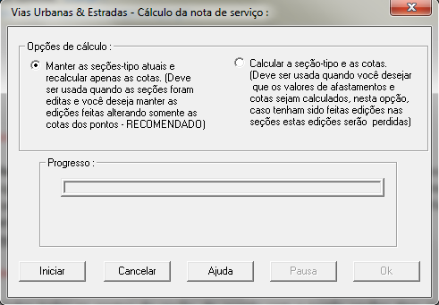

Nota de Serviço
Nota de Serviço:
O cálculo da nota de serviço é feito através da opção do menu Cálculos->Nota de serviço. O diálogo acima surgirá um diálogo e nele devem ser colocadas as opções para o cálculo da Nota de serviço. É um diálogo iterativo e caso ocorram erros durante o cálculo estes erros serão apresentados ao usuário. A barra de progresso indica que os cálculos estão sendo executados. Caso os perfis geológicos tenham sido definidos o cálculo dos off-sets neles também serão calculados.

Dialogo para cálculo da Nota de Serviço
Opções:
Manter as seções-tipo atuais (Recomendado):
Nesta opção o Programa Vias Urbanas & Estradas recalcula a nota de serviço mas mantém os pontos editados (inseridos, removidos ou alterados) através do desenho das seções. Isto significa que o perfil atual da seção de projeto será mantido, independentemente da seção constante no arquivo de seções tipo. É preciso observar que, caso as seções tenham sido editadas, estas alterações não constarão nas tarefas de seções-tipo bem como nas tarefas de alargamentos sarjetas passeios ou na triangulação de Delaunay.
Esta opção é a opção recomendada pois se houve edição de pontos estas edições serão mantidas.
Calcular as seções tipo e as cotas:
Nesta opção serão recalculados todos os pontos da seção, e a seção tipo será restaurada de acordo com a tarefa seções tipo. Isto significa que se houve edição (inserção, remoção ou alteração) de pontos elas serão perdidas.
Botões:
· Iniciar:
Ao pressionar este botão inicia-se o cálculo da nota de serviço. Caso haja algum erro durante os cálculos eles serão apresentados através de um diálogo.
· Cancelar:
Este botão cancela a solicitação do cálculo da nota de serviço. Fecha o diálogo e sai. A nota de serviço não será calculada.
· Ajuda:
Este botão apresenta a tela de ajuda (esta tela).
· Pausar:
Este botão interrompe o cálculo da nota de serviço. O cálculo será interrompido até que se pressione Continuar ou Cancelar.
· OK:
Ao final dos cálculos é apresentada uma mensagem informando se os cálculos foram executados com êxito ou não. Este botão finaliza o cálculo. fechando o diálogo. Caso não tenha havido erros os dados da nota de serviço serão gravado o arquivo .not. Caso tenha havido erros uma mensagem será apresentado, informando esta situação e a nota de serviço não será gerada. Consequentemente, todos os cálculos posteriores (volumes, áreas de taludes etc.) não poderão ser executados, pois dependem do cálculo da nota de serviço.
Direitos Autorais © (2010 - 2015) - Boole Software LTDA - Todos os direitos Reservados.
Created with the Personal Edition of HelpNDoc: Free Kindle producer